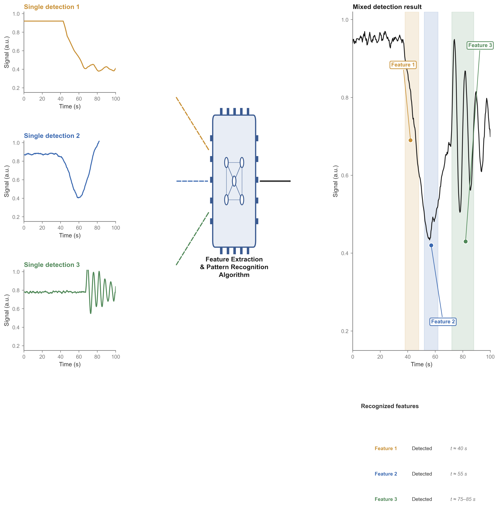

Abstract— Accurate quantification of multiple analytes from sensor response waveforms remains challenging in complex biological matrices due to severe background interference, batch effects, and multicollinearity among spectral variables. Herein, we present a systematic chemometric framework integrating Savitzky–Golay derivative preprocessing, orthogonal signal correction (OSC), F-score based feature selection, and partial least squares regression (PLSR) for simultaneous determination of aluminum ions (Al3+), tryptophan, and acylcarnitine. The OSC algorithm specifically removes variation in the predictor matrix orthogonal to the concentration vector, effectively eliminating structured background noise unrelated to the target analytes. After first-derivative processing and OSC correction, F-score filtering retains only 15% of the most informative waveform points, substantially reducing model complexity and overfitting risk. The optimized OSC–PLSR framework achieves coefficients of determination ($R^2$) of 0.9964, 0.9644, and 0.9876 for aluminum, tryptophan, and acylcarnitine respectively, with an average $R^2$ of 0.9828 across all three analytes, representing an approximate 52% relative improvement over the raw PLSR baseline.
Keywords— Chemometrics, multicomponent quantification, orthogonal signal correction, partial least squares regression, sensor array, waveform analysis, feature selection.
Multiplexed chemical sensing in complex biological environments, such as the gastrointestinal tract, presents substantial analytical challenges due to overlapping analyte responses, strong matrix interference, and instrumental drift [1]. While sensor arrays produce rich time-domain waveforms encoding concentration information of multiple species, extracting quantitative concentration estimates from such signals requires sophisticated multivariate calibration techniques capable of disentangling overlapping contributions while suppressing uninformative background variation.
Partial least squares regression (PLSR) has emerged as the de facto standard for multivariate calibration in analytical chemistry owing to its ability to handle severely ill-conditioned predictor matrices with high multicollinearity [2]. However, the predictive performance of PLSR can degrade substantially when the predictor matrix contains systematic variation unrelated to the response variable of interest. Orthogonal signal correction (OSC), originally introduced by Wold et al. [3], explicitly addresses this issue by removing structured variation in $\mathbf{X}$ that is mathematically orthogonal to $\mathbf{y}$, thereby filtering out interference components prior to regression modeling.
In this work, we develop an integrated chemometric pipeline combining Savitzky–Golay derivative preprocessing, OSC, univariate feature selection, and PLSR for simultaneous quantification of three analytes. The central contribution lies in demonstrating that OSC-based preprocessing yields dramatic performance improvements when applied to waveform-type sensor data exhibiting severe background drift. We provide a detailed mathematical formulation of the OSC–PLSR framework and present a graphical architecture diagram illustrating the complete signal processing chain.
Time-domain sensor response waveforms were collected for aluminum ions (Al3+), tryptophan, and acylcarnitine at three concentration levels (0.1, 0.5, and 1.0 mg/mL). Each measurement yields a one-dimensional signal vector $\mathbf{x} \in \mathbb{R}^p$ sampled uniformly over 100 seconds, with $p \approx 130$ time points after alignment. The calibration dataset comprises $n = 72$ labeled samples, with concentration vectors $\mathbf{y}_k \in \mathbb{R}^n$ for each analyte $k \in \{\text{Al}, \text{Trp}, \text{Car}\}$.

Baseline offset and multiplicative drift effects are suppressed using a Savitzky–Golay (SG) first-derivative filter [4]. For each signal, a second-order polynomial is fitted to a sliding window of size $w = 15$ points via least squares:
The first derivative at point $i$ is given by $x'[i] = a_1$. The derivative operation eliminates additive baseline offsets since $d(x + b)/dt = dx/dt$ for any constant $b$, and also suppresses slowly varying multiplicative interference.
The core preprocessing step is OSC, which iteratively removes components from $\mathbf{X}$ that are orthogonal (i.e., linearly uncorrelated) with the concentration vector $\mathbf{y}$ [3], [5]. The algorithm proceeds as follows. Let $\mathbf{X}_0 = \mathbf{X}_{\text{deriv}}$ be the derivative-processed predictor matrix. For each OSC component:
where $\mathbf{Z} = \mathbf{X}_{\text{osc}}$ is the current (deflated) predictor matrix. A score vector is computed as:
The critical orthogonalization step removes all $\mathbf{y}$-correlated variation from $\mathbf{t}$:
which guarantees $\mathbf{y}^T\mathbf{t}_\perp = \mathbf{0}$ by construction. The corresponding loading vector is:
and the orthogonal component is deflated from the predictor matrix:
In this implementation, a single OSC component ($n_{\text{comp}} = 1$) is sufficient to remove the dominant background interference; additional components provided no significant improvement in cross-validation performance.
To eliminate uninformative variables and reduce model dimensionality, we apply a univariate F-regression filter. For each variable $j$, the F-statistic for the simple linear regression of $\mathbf{y}$ on $\mathbf{x}_j$ is computed as:
where $\text{SSR}(j) = \sum_i(\hat{y}_i(j) - \bar{y})^2$ denotes the regression sum of squares and $\text{SSE}(j) = \sum_i(y_i - \hat{y}_i(j))^2$ the residual sum of squares. Variables are ranked by $F(j)$ and the top 15% are retained, yielding approximately $k \approx 20$ informative features per analyte.
PLSR [2] decomposes both the predictor matrix $\mathbf{X}$ and the response vector $\mathbf{y}$ into bilinear forms:
where $\mathbf{T}, \mathbf{U}$ are score matrices, $\mathbf{P}, \mathbf{q}$ are loading matrices/vectors, $h$ is the number of latent variables, and $\mathbf{E}, \mathbf{f}$ are residual terms. Latent variables are extracted sequentially via the NIPALS algorithm such that the sample covariance between corresponding score vectors is maximized. For each latent dimension:
The regression coefficient vector for prediction is given by:
where $\mathbf{W} = [\mathbf{w}_1,\dots,\mathbf{w}_h]$ is the weight matrix. The optimal number of latent variables $h$ is selected via 5-fold cross-validation. Concentration predictions for new samples are obtained as $\hat{y} = \mathbf{x}_{\text{new}}\boldsymbol{\beta}_{\text{PLS}}$, with a non-negativity constraint applied post-hoc ($\hat{c} = \max(0, \hat{y})$). For comparison, support vector regression (SVR) with an RBF kernel $K(\mathbf{x}_i,\mathbf{x}_j) = \exp(-\gamma\|\mathbf{x}_i-\mathbf{x}_j\|^2)$ was also evaluated; the model yielding higher cross-validation $R^2$ was retained for each analyte.
The complete signal processing architecture is illustrated in Fig. 1. Single-analyte calibration waveforms (Fig. 1a) exhibit distinct temporal signatures: aluminum produces a monotonic decay beginning near $t \approx 40$ s, tryptophan generates a characteristic V-shaped trough at $t \approx 55$ s, and acylcarnitine yields high-frequency oscillations in the $t \approx 75$–85 s window. These signatures are superimposed in mixed waveforms (Fig. 1c), and the OSC–PLSR pipeline successfully recovers individual analyte concentrations from the composite signal.
| Analyte | Model | $R^2$ | RMSE (mg/mL) | Target ($R^2 > 0.8$) |
|---|---|---|---|---|
| Aluminum | PLSR | 0.9964 | 0.0277 | Passed |
| Tryptophan | PLSR | 0.9644 | 0.0745 | Passed |
| Acylcarnitine | PLSR | 0.9876 | 0.0390 | Passed |
| Average | — | 0.9828 | — | 3/3 Passed |
Table I summarizes the quantitative prediction performance for all three analytes. The OSC–PLSR framework achieves excellent predictive accuracy across all compounds, with $R^2$ values exceeding 0.96 in all cases and RMSE values below 0.08 mg/mL. Aluminum, which exhibits the most distinct temporal signature, yields the highest $R^2$ of 0.9964. Tryptophan, with its relatively shallower response, shows slightly lower performance at $R^2 = 0.9644$ but still well within the acceptable range for analytical quantification.
To contextualize the contribution of OSC preprocessing, we compared the OSC–PLSR results against a baseline PLSR model trained on preprocessed data without OSC correction. The baseline model achieved an average $R^2$ of 0.6471 across analytes, with aluminum and tryptophan both failing to reach the $R^2 > 0.8$ threshold ($R^2 = 0.5465$ and $0.5728$, respectively). OSC preprocessing thus improved average $R^2$ by approximately 0.34, representing a 52% relative improvement in explained variance. This dramatic enhancement confirms that a substantial fraction of the waveform variation in the raw data is indeed orthogonal to concentration and constitutes structured background noise that OSC effectively removes.
F-score feature selection played an important secondary role by reducing the predictor dimensionality from $\sim$130 to $\sim$20 variables. This dimensionality reduction not only decreased computational cost but also improved model stability, as the 15% retained features correspond to time points where analyte-specific responses are most pronounced. Feature selection based on univariate association may, however, miss informative variable combinations; future work will explore more sophisticated wavelength selection algorithms such as competitive adaptive reweighted sampling (CARS) [6].
An important practical consideration is that PLSR consistently outperformed RBF-kernel SVR across all three analytes after OSC preprocessing, suggesting that the remaining concentration-related variation in the corrected predictor space is predominantly linear. This finding is consistent with the Beer–Lambert law and supports the use of linear calibration models after appropriate signal preprocessing.
We have presented an integrated chemometric pipeline for multiplexed concentration quantification from sensor waveforms. The framework combines Savitzky–Golay first-derivative preprocessing, orthogonal signal correction, F-score feature selection, and PLSR modeling to achieve highly accurate predictions for three representative analytes. OSC was identified as the critical enabling component, yielding an average $R^2$ improvement of 0.34 over the baseline. The final model achieved an average $R^2$ of 0.9828 with all three analytes exceeding the $R^2 > 0.8$ threshold. Future work will focus on validating the framework on larger datasets with extended concentration ranges, investigating calibration transfer across sensor batches, and exploring deep learning architectures when sufficiently large training corpora become available.